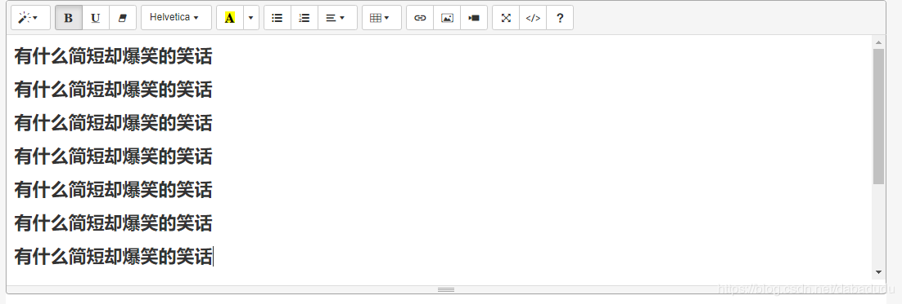
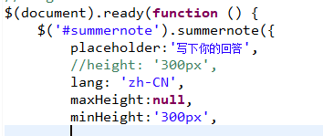
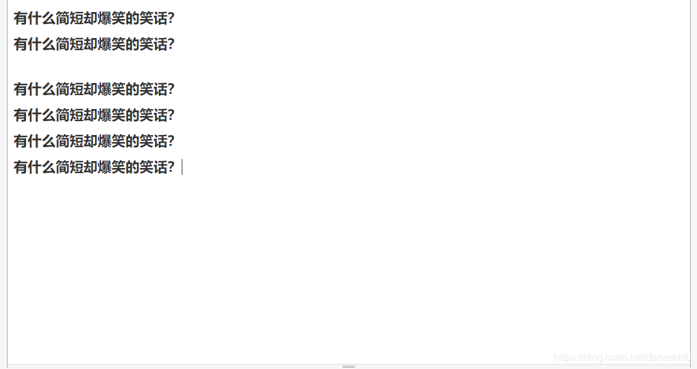
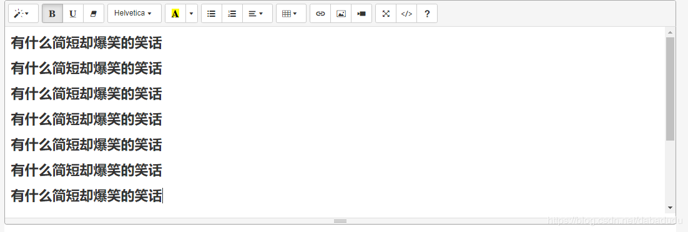
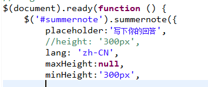
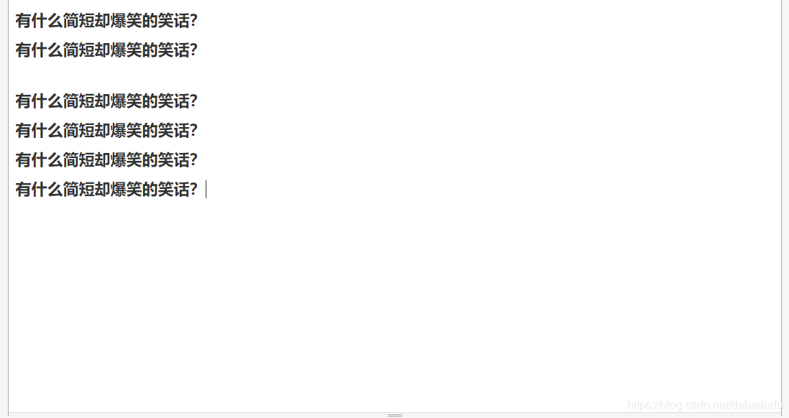

博客
Summernote编辑器高度随文本变化解决
Summernote编辑器高度随文本变化解决
用到Summernote编辑器，但是想要编辑器的高度在内容高于300px的时候可以随着文本内容自己增加，初始的编辑器在内容高于300px的时候会出现滚动条，如下图： https://summernote.org/getting-started/. 用它提供的示例代码试了一下，可以成功。

其实超级简单，只要把之前设置的height改成min-height就ok了


用到Summernote编辑器，但是想要编辑器的高度在内容高于300px的时候可以随着文本内容自己增加，初始的编辑器在内容高于300px的时候会出现滚动条，如下图： https://summernote.org/getting-started/. 用它提供的示例代码试了一下，可以成功。

其实超级简单，只要把之前设置的height改成min-height就ok了

